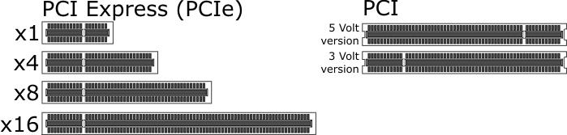
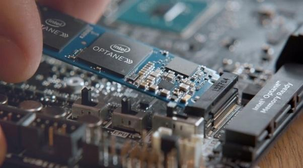
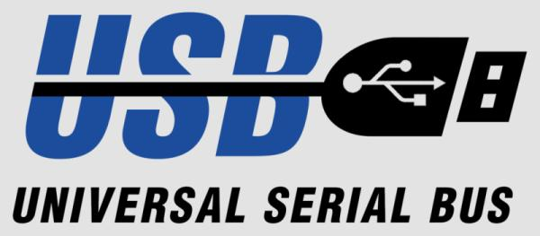
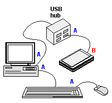
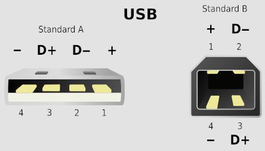
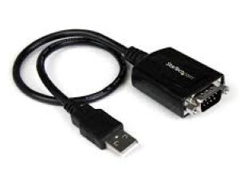
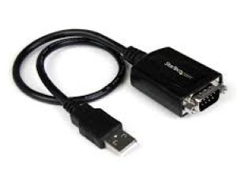
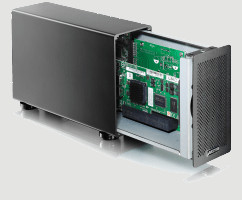
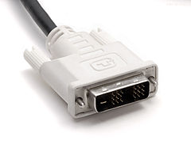
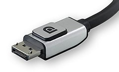

The Bus
The system bus creates a common pathway, or channel, between multiple devices. These channels are physically made with conductive materials like pins, wires, and traces to carry electrical signals across a circuit board. Logically the bus communicates using various bus protocols.
The system bus is comprised of three parts: the control bus, the address bus, and the data bus, which work together to get the system work done. The address bus carries the information about the device with which the CPU is communicating, the data bus carries the actual data being processed, the control bus carries commands from the CPU and returns status signals from the devices.
Buses are either local or peripheral.
The local bus or processor bus, provides a parallel data transfer path between the CPU and main memory. The size of this bus depends on the size of the processor.
A 32-bit local bus transfers 32-bits at the same time (in parallel) over 32 wires. A 64-bit bus uses 64 wires. Physically bits are electric pulses of on and off patterns and logically they are interpreted as binary digits.
The front side bus connects the CPU to the L2 Cache and Northbridge memory controller (see illustraton below). The original front-side bus architecture has been replaced by Direct Media Interface (DMI) in CPUs since 2000.
DMI is used by one or more processors to connect the what used to be northbridge to the PCH aka southbridge.
QPI is used to connect the socket 1366 processors to the northbridge, while the northbridge is completely incorporated into socket 1155 processors, so no QPI bus is possible or necessary with socket 1155 processors.
The control bus is made up of interrupt lines, byte enables lines, read/write signals and status lines.
Interrupt Request (IRQ) Lines
IRQ is a specified type of control bus line used by devices to interrupt the current stream of data to the central processing unit. It allows the computer to do control many tasks by interrupting an ongoing process to get a new task quickly done if the new task has a higher priority.
The central processing unit does not know if the system is sending or receiving data without the control bus. Where the write and read information have to go is managed and regulated by the control bus.
Addresses are sent over the address bus to signal a memory location, and the data is transferred over the data bus to that location.
The peripheral bus connects any expansion cards to the system. This bus used to be called the "southbridge", but more recently is being called the Platform Controller Hub (PCH) or I/O Controller Hub (ICH).
There are internal and external peripherals, devices that are connected either on the inside or the outside of the system chassis. Both internal and external devices physically connect to the same peripheral bus, but logically use different peripheral bus protocols. An analogy would be physically using your mouth to speak, but logically speaking English and Spanish.
The most common internal peripheral protocol is PCIe, and the most common external is USB.
Internal Peripheral Bus

|
ISA short for Industry Standard Architecture was an expansion bus commonly used in the original IBM PCs of the 1970s.
EISA short for Expanded ISA improved the original ISA standard.
PCI Peripheral Component Interconnect
It was designed primarily by Intel and first appeared on PCs in late 1993. PCI runs at 33MHz, supports 32- and 64-bit data paths and bus mastering.It was the first bus to provide "plug and play" capability.
AGP or Accelerated Graphics Port was designed as a high-speed PCI replacement for attaching a video card to a computer system.
Micro Channel was a proprietary 16 or 32-bit parallel computer bus introduced by IBM in 1987. It replaced the ISA bus and was itself replaced by PCI bus architecture.
VL, Video Electronics Standards Association Localbus was a short-lived bus introduced during the 486 generation of x86 IBM PCs.
|
IDE
Integrated Drive Electronics is a standard parallel bus interface for storage devices. The IDE controller is often built into the motherboard and uses a master/slave confguration to allow multiple devices to attach to the same cable and interface. Prior to the IDE drive, controllers were separate external devices so IDE reduced problems associated with storage devices and integrated controllers.
SCSI
Small Computer System Interface is a set of standards formalized in 1986 for physically connecting and transferring data between computers and peripheral devices that competed with IDE. The SCSI standards define commands, protocols, electrical, optical and logical interfaces. SCSI is most commonly used for hard disk drives and tape drives, but it can connect a wide range of other devices, including scanners and CD drives, although not all controllers can handle all devices.
ATA/PATA
IDE was adopted as a standard by the American National Standards Institute (ANSI) in November 1990, who made a series of generational changes and changed the name to Advanced Technology Attachment (ATA). This name was later updated to Parallel ATA (PATA) after Serial ATA was released.
SATA
Serial Advanced Technology Atachment succeeded the older Parallel ATA (PATA) standard in 2000, offering several advantages over the older interface: reduced cable size and cost (seven conductors instead of 40 or 80), native hot swapping, faster data transfer through higher signaling rates, and more efficient transfer through an (optional) I/O queuing protocol.
SAS
Serial Attached SCSI (SAS) is a point-to-point serial protocol that moves data to and from computer-storage devices such as hard drives and tape drives. SAS replaces the older Parallel SCSI bus technology. SAS, like its predecessor, uses the standard SCSI command set. SAS offers optional compatibility with Serial ATA (SATA), versions 2 and later. This allows the connection of SATA drives to most SAS backplanes or controllers. The reverse, connecting SAS drives to SATA backplanes, is not possible.
In 2004, other than SATA and SAS, all the protocols listed above were succeeded by Peripheral Component Interconnect Express (PCIe). SATA and SAS might also be on their way out, but not as of 2018. Time will tell.



[PCIe 5.0, 32 GT/s, 32 Gb/s, ~ 3.9 GB/s, ~ 63 GB/s (×16) expected in 2019]
PCIe is a high-speed serial computer expansion bus standard, designed to replace the older PCI, PCI-X and AGP bus standards.
PCIe has numerous improvements over the older standards, including higher maximum system bus throughput, lower I/O pin count and smaller physical footprint, better performance scaling for bus devices, a more detailed error detection and reporting mechanism (Advanced Error Reporting, AER), and native hot-swap functionality. More recent revisions of the PCIe standard provide hardware support for I/O virtualization.
Defined by its number of lanes, the PCI Express electrical interface is also used in a variety of other standards, most notably the laptop expansion card interface ExpressCard and computer storage interfaces SATA Express and M.2.
Format specifications are maintained and developed by the PCI-SIG (PCI Special Interest Group), a group of more than 900 companies that also maintain the conventional PCI specifications. PCIe 3.0 is the latest standard for expansion cards that are in production and available on mainstream personal computers.
All PCI Express versions are backward and forward compatible, meaning no matter what version the PCIe card or your motherboard supports, they should work together, at least at a minimum level. The max performance of the card is based on the revision of the PCIe port on your motherboard.
If you use a Version 3.0 PCIe card on a 2.0 port, it will probably work at 2.0 speed.
Mini PCI Express

PCI Express Mini Card (also known as Mini PCI Express, Mini PCIe, Mini PCI-E, mPCIe, and PEM), based on PCI Express, is a replacement for the Mini PCI form factor. It is developed by the PCI-SIG. The host device supports both PCI Express and USB 2.0 connectivity, and each card may use either standard. Most laptop computers built after 2005 use PCI Express for expansion cards; however, as of 2015, many vendors are moving toward using the newer M.2 form factor for this purpose.
Mini PCIe v2 (M.2)

The new version of Mini PCI express, M.2 replaces the mSATA standard. Computer bus interfaces provided through the M.2 connector are PCI Express 3.0 (up to four lanes), Serial ATA 3.0, and USB 3.0 (a single logical port for each of the latter two). It is up to the manufacturer of the M.2 host or device to select which interfaces are to be supported, depending on the desired level of host support and device type.
NVMe
Non-Volatile Memory External (NVMe) is a specification for accessing NAND flash memory, such as solid-state drives (SSDs) attached via a PCIe. If the price comes down, this could replace SATA and SAS as the default storage bus, making PCIe and USB the standard peripheral bus types.
External Peripherial Bus
Universal Serial Bus (USB)

USB is now the standard interface for low-speed peripherals such as the keyboard,
mouse, joystick, scanner, printer and telephony devices. The original USB standard has a max bandwidth of 1.5 Mbytes/sec, and up to 127 devices can be attached.
Peripherals can be "hot swapped" or plugged in and unplugged without turning the system off.
USB ports began to appear on PCs in 1997, and was integrated into all the major systems since Windows 98.
The devices are plugged directly into a four-pin USB socket on the PC or into a multi-port hub.
 
Specifications suggests that plugs and receptacles be colour-coded (SuperSpeed is identified by blue).
Unlike other data buses (such as Ethernet), USB connections are directed. A host device has "downstream" facing ports that connect to the "upstream" ports of devices. Only downstream facing ports provide power.
This topology was chosen to prevent electrical overloads and damaged equipment so USB cables have different ends: A and B, with different physical connectors for each. Each format has a plug and receptacle defined for each of the A and B ends.

USB connections resolve installation conflicts, with a standard software system called PnP (Plug and Play) developed by IBM and Microsoft in the 1990s. Now users no longer have to manually assign settings like IRQs.
USB-C, also known as USB Type-C, is a 24-pin USB connector system, which is distinguished by its two-fold rotationally-symmetrical connector.

The USB Type-C Specification 1.0 was published by the USB Implementers Forum (USB-IF) and was finalized in August 2014. It was developed at roughly the same time as the USB 3.1 specification. The default protocol with the USB-C connector is USB 3.1, which, at 10Gbps, is theoretically twice as fast as USB 3.0.
USB-C specification also supports Intel’s Thunderbolt 3 data-transfer technology. A USB-C port equipped with Thunderbolt 3 can push data speeds to a theoretical limit of 40Gbps.
USB-C’s Alternate Mode for video enables adapters to output video from USB-C port to HDMI, DisplayPort, VGA and other types of video connectors on displays, TVs and projectors.
RS-232 UART
Recommended Standard (RS) 232 is a standard introduced in 1960 for serial communication transmission of data. It works together with a Universal Asynchronous Receiver Transmitter (UART) for serial communication in which the data format and transmission speeds are configurable.
The RS-232 electric signaling levels and methods are handled external to the UART. A UART is usually an individual (or part of an) integrated circuit (IC) used for serial communications over a computer or peripheral device serial port.
Together they formally define communication connecting between DTE (data terminal equipment) such as a computer terminal, and a DCE (data circuit-terminating equipment or data communication equipment), such as a modem. You often hear a DB-9 serial cable being called a "null modem cable".
 
 
The standard defines the electrical characteristics and timing of signals, the meaning of signals, and the physical size and pinout of connectors. Workstations used to have DB9 UART ports, but they have been replaced by USB.
USB to "serial" adapters are still un use today. Although USB is a serial bus, when people say serial port, they usually mean RS-232.
RS-232 and USB dominate, but other serial buses still in use today include:
I2C
Inter-Integrated Circuit, pronounced I-squared-C, is a synchronous, multi-master, multi-slave, packet switched, single-ended, serial computer bus invented in 1982 by Philips Semiconductor (now NXP Semiconductors). It is widely used for attaching lower-speed peripheral ICs to processors and microcontrollers.
SMBus
System Management Bus is a single-ended simple two-wire bus for the purpose of lightweight communication. Not to be confused with SMB the Server Message Block network protocol.
SMBus is derived from I2C for communication with low-bandwidth devices on a motherboard, especially power related chips such as a laptop's rechargeable battery subsystem . Other devices might include temperature, fan or voltage sensors, lid switches and clock chips. PCI add-in cards may connect to an SMBus segment.
SPI
Serial Peripheral Interface is a synchronous serial communication interface specification used for short distance communication, primarily in embedded systems. The interface was developed by Motorola in the mid 1980s and has become a de facto standard. Typical applications include Secure Digital cards and liquid crystal displays.
SPI devices communicate in full duplex mode using a master-slave architecture with a single master. The master device originates the frame for reading and writing. Sometimes SPI is called a four-wire serial bus in reference to the two wire SMBus.
PCMCIA (PC Cards)

Personal Computer Memory Card International Association is an international standards body that was founded in 1989 to established the standard for connecting peripherals to laptops. PC Cards are business card sized and with 68-pin connector that plugs into a CardBus. Not only did they dominate the laptop market, but they were also seen in Remote Authentication Dial-In User Service (RADIUS) servers. They were thinner than the phone cable RJ-10 connector so they worked, at first, with dongle cables which were later replaced by pop out "XJack" connections.
RCA Composite
RCA connector, sometimes called a phono connector or Cinch connector, is a coaxial radio frequency connector designed to work at radio frequencies in the multi-megahertz range. Commonly used to carry audio and video signals. The name RCA derives from the Radio Corporation of America, which introduced the design by the early 1940s.
4P4C / RJ-10
4P4C connector is the standard modular connector used on both ends of telephone handset cords, and is therefore often called a handset connector. This handset connector is not a registered jack, because it was not intended to connect directly to the telephone lines. However it is often referred to as RJ10.
Phone Jack
A phone jack, audio jack, headphone jack or jack plug, is a family of electrical connectors typically used for analog audio signals. The phone connector was invented for use in telephone switchboards in the 19th century and is still widely used.
The Three-contact versions are known as TRS connectors, where T stands for "tip" (left audio), R stands for "ring" (right audio) and S stands for "sleeve" (ground). TRRS (stereo-plus-mic) sockets became particularly common on smartphones, which are often compatible with standard 3.5 mm stereo headphones.
eSATA/eSATAp
The eSATA connector is a more robust SATA connector, intended for connection to external hard drives and SSDs. eSATA's transfer rate (up to 6 Gbit/s) is similar to that of USB 3.0. A device connected by eSATA appears as an ordinary SATA device, giving both full performance and full compatibility associated with internal drives. eSATA does not supply power, but eSATAp (Power over eSATA) does, and is fully compatible with USB 3.0.
ePCIe

External PCI Express (ePCIe) specifications were released by the PCI-SIG in February 2007. Standard cables and connectors have been defined for ×1, ×4, ×8, and ×16 link widths, with a transfer rate of 250 MB/s per lane. The PCI-SIG also expects the norm will evolve to reach 500 MB/s, as in PCI Express 2.0.
With an ePCIe laptop port and an enclosure case containing PCIe-to-ePCIe adapter circuitry, you can use hardware intended for desktops with your laptop.
VGA

Video Graphics Array (VGA) is a graphics standard for video display controller first introduced with the IBM PS/2 line of computers in 1987, following CGA and EGA introduced in earlier IBM personal computers. VGA follows the RGB color model is an additive color model in which red, green and blue light are added together in various ways to reproduce a broad array of colors. For this reason, you sometimes hear a VGA cable being called an RGB cable.
DVI

Digital Visual Interface (DVI) is a video display interface developed by the Digital Display Working Group (DDWG). The digital interface is used to connect a video source, such as a video display controller, to a display device, such as a computer monitor. It was developed with the intention of creating an industry standard for the transfer of digital video content.
HDMI

High-Definition Multimedia Interface (HDMI) is a proprietary audio/video interface for transmitting uncompressed video data and compressed or uncompressed digital audio data from an HDMI-compliant source device, such as a display controller, to a compatible computer monitor, video projector, digital television, or digital audio device. HDMI is a digital replacement for analog video standards.
DP

DisplayPort (DP) is a digital display interface developed by a consortium of PC and chip manufacturers and standardized by the Video Electronics Standards Association (VESA).
The interface is primarily used to connect a video source to a display device such as a computer monitor, and it can also carry audio, USB, and other forms of data.
DisplayPort was designed to replace VGA and DVI. The interface is backward compatible with other interfaces, such as HDMI and DVI, through the use of either active or passive adapters.
Thunderbolt

Thunderbolt combines PCI Express and Mini DisplayPort into a new serial data interface. Original Thunderbolt implementations have two channels, each with a transfer speed of 10 Gbit/s, resulting in an aggregate unidirectional bandwidth of 20 Gbit/s.
Thunderbolt 2 uses link aggregation to combine the two 10 Gbit/s channels into one bi-directional 20 Gbit/s channel. Thunderbolt 3 uses the USB Type-C connector and one 40 Gbit/s channel.

Bluetooth is a wireless technology standard for exchanging data over short distances. It uses short-wavelength UHF radio waves in the ISM band from 2.400 to 2.485 GHz from fixed and mobile devices. Invented by Dutch electrical engineer Jaap Haartsen at Ericsson in 1994 as a wireless alternative to RS-232 data cables. Bluetooth is a packet-based protocol with a master/slave architecture. One master may communicate with up to seven slaves in a piconet. All devices share the master's clock.
Next Page: Memory